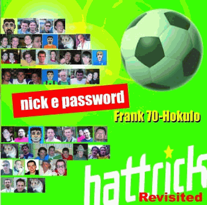

E' finalmente on-line il mitico album solista di frank70-Hokulo,
noto come fondatore della B.H.F. (Bologna Hattrick Federation) e genio
indiscusso della canzone Hattrick-style. I parolieri d'eccezione
hanno dato un apporto fondamentale ad un'opera prima e forse unica che
resterà sicuramente nella storia della musica
Hattrickiana. Peccato per la copertina che è (e forse
resterà per sempre) provvisoria a causa dell'apocalisse
informatica che ha devastato il PC del designer.
La cartella Immagini CD contiene le immagini già pronte da masterizzare nei formati più diffusi; la cartella Pre-release
contiene MP3 con una qualità inferiore e nell'ordine di uscita
delle canzoni in conference (quindi non nello stesso ordine
dell'album); la cartella corrente contiene MP3 ad alta qualità,
un documento HTML con tutti i testi (originali ed Hattrickiani) ed uno
"zippone" per scaricare tutti gli MP3 in un colpo solo. In ogni
cartella è presente un file checksum-md5.txt contenente gli hash MD5 dei file per verificare il corretto scaricamento degli stessi.
Sono lieto di dare visibilità (per quel poco che posso) all'ultima fatica, questa volta non "hattrickiana" del mitico frank70-Hokulo (al secolo Franco Turra). Nell'attesa del sito ufficiale, ecco una gustosa anteprima su MySpace.
Aggiornamento: disponibile ora anche il sito ufficiale di Pedale Baroque!

MySpace
|
Sito Ufficiale